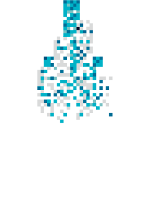
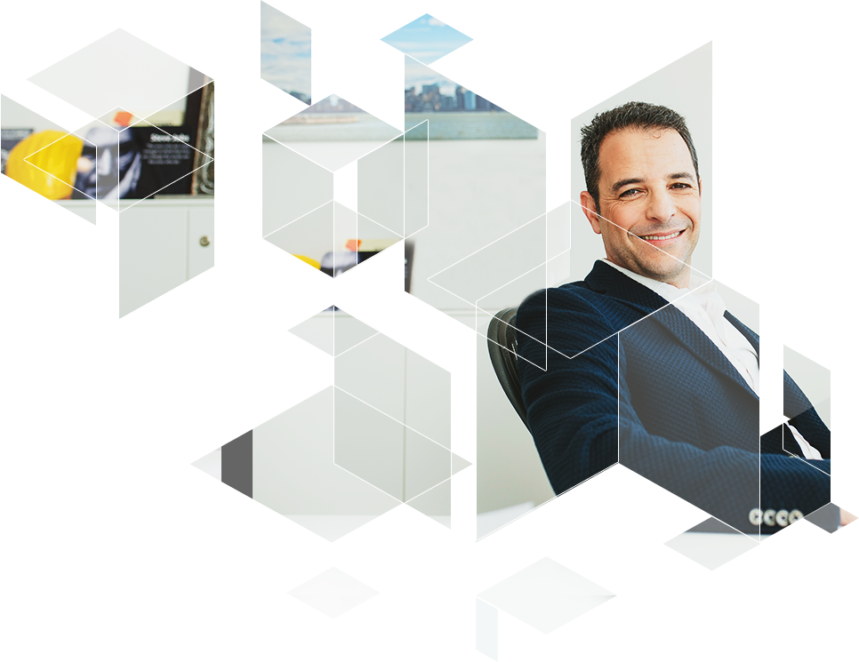

<!DOCTYPE html>
<html lang="he" dir="rtl">
<head>
    <meta name="robots" content="noindex, nofollow">
    <meta name="viewport" content="user-scalable=no, width=device-width, initial-scale=1, maximum-scale=1">
    <meta name="format-detection" content="telephone=no">
    <meta name="format-detection" content="address=no">
    <meta charset="UTF-8">
    <title>About us</title>

    <link rel="stylesheet" href="css/about-us_page.css">
    <script src="js/vendors/jquery-2.1.4.min.js"></script>
    <script src="js/vendors/swiper.jquery.min.js"></script>
    <script src="js/vendors/jquery.nicescroll.min.js"></script>
    <script src="js/app.min.js"></script>
</head>
<body>

<!-- site -->
<div class="site">

    <!-- menu-btn -->
    <span class="menu-btn"></span>
    <!-- /menu-btn -->

    <!-- site__header -->
    <header class="site__header">

        <!-- logo -->
        <a href="#" class="logo"></a>
        <!-- /logo -->

        <!-- menu -->
        <nav class="menu">

            <!-- menu__close -->
            <span class="menu__close"></span>
            <!-- /menu__close -->

            <a href="#" class="menu__item">אודותינו</a>
            <a href="#" class="menu__item">ניהול פרוייקטים</a>
            <a href="#" class="menu__item">פרוייקטים נבחרים</a>
            <a href="#" class="menu__item">בין לקוחותינו</a>
            <a href="#" class="menu__item">צור קשר</a>

        </nav>
        <!-- /menu -->

    </header>
    <!-- /site__header -->

    <!-- site__content -->
    <div class="site__content">

        <!-- about-us -->
        <div class="about-us">

            <!-- site__page -->
            <span class="site__page">01</span>
            <!-- /site__page -->

            <!-- site__title -->
            <h1 class="site__title">אודותינו</h1>
            <!-- /site__title -->

            <!-- about-us__founder -->
            <div class="about-us__founder">

                

                <!-- about-us__founder-title -->
                <strong class="about-us__founder-title">לחברת י. בנדל ניהול פרויקטים, ולמייסד יגאל בנדל, ניסיון עשיר בניהול ופיקוח פרויקטים עוד משנת 1996. החברה מתמחה בניהול פרויקטים של בניה, הרחבה ושיפוץ של משרדי חברות, מהמובילות במשק הישראלי, על פי תכנונים אדריכליים מורכבים, תוך עמידה בתקציבים ובלוחות הזמנים שהוגדרו לפרויקט.
                    למייסד החברה, יגאל בנדל, המכהן כבעלים ומנכ"ל גם כיום, ניסיון רב בתחום הייעוץ, הבקרה, הפיקוח והניהול של פרויקטים לבניה והוא בעל תואר בהנדסה אזרחית Bsc מטעם הטכניון.</strong>
                <!-- /about-us__founder-title -->

                <p>י. בנדל מעמידה לרשות לקוחותיה צוות יועצים מקצועי ומנוסה, שתפקידו לתת מענה מלא ללקוחות בתכנון ובניהול הפרויקט, תוך הקפדה על מתן שירות ברמה גבוהה ועל יחס אישי. יועצי החברה מלווים את הפרויקט משלבי האפיון, התכנון והייזום ועד לגמר הפרויקט, האכלוס והבדק.</p>
                <p>הפרויקטים אותם ניהלה החברה מגוונים, בסדרי גודל משתנים ובמגוון עיצובים רחב. אנו גאים בפרויקטים אותם ניהלנו, וגאים בכך שלקוחות רבים אשר בחרו בנו עבור ניהול הפרויקטים שלהם בחרו בנו שוב גם עבור פרויקטים נוספים.</p>
                <p>הצוות המקצועי בחברת י. בנדל ניהול פרויקטים ערוך להתמודד עם כל אתגר המתגלה במהלך תהליך התכנון או הביצוע בפועל, ובזכותם של השותפים העסקיים לניהול הפרויקט: אדריכלים, קבלני ביצוע ואחרים, אשר נבחרים בקפידה ובהתאמה מדויקת לפרויקט, עומד בהם בהצלחה יתרה.</p>
                <p>אנו מאמינים כי תכנון מדויק, מקצועיות בלתי מתפשרת וניהול נכון הם המפתח להצלחת כל פרויקט ולכן בוחרים את הצוות המוביל שלנו בקפידה. כל מנהלי הפרויקטים שלנו מנוסים וערוכים לתת מענה מלא ומדויק ללקוחותינו. עם זאת, יגאל בנדל, הבעלים, מעורב בכל פרויקט ופרויקט ונותן מהידע ומהניסיון שלו להצלחתו. </p>

            </div>
            <!-- /about-us__founder -->

            <!-- about-us__list -->
            <div class="about-us__list">

                <h2>כל פרויקט מהפרויקטים אותם אנו מובילים מנוהל לאורם של ערכי החברה, המנחים את פועלנו מדי יום:</h2>

                <!-- site__list -->
                <ul class="site__list">
                    <li>הצלחת הפרויקט היא ההצלחה שלנו – אנו מאמינים שהלקוח בחר בנו כי הוא יודע שנשלים עבורו את הפרויקט באופן הטוב ביותר. ולכן, אנו מקפידים לתת לו את השקט והביטחון להמשיך בפעילות שגרתית מתוך ידיעה ברורה שהפרויקט בידיים טובות.</li>
                    <li>האחריות היא שלנו – תפקידנו אינו להיות חלק מהפרויקט, אלא לעמוד בראשו ולהוביל את כל המעורבים במסע להשלמתו. אנו נתמודד עם האתגרים, המכשולים והקשיים שיצוצו בדרך ונרכיב את התצרף הגדול הזה לכדי מוצר מוגמר ואיכותי.</li>
                    <li>הניסיון והמקצועיות הם מעל הכל – ולכן אנו מקפידים על צוות איכותי שמסוגל לתת מענה מלא לכל צורכי הלקוח והפרויקט.</li>
                    <li>בקרה תמידית – אנו מבינים כי בפרויקטים שאנו מנהלים מושקעים משאבים כספיים וארגוניים רבים. לכן, אנו מקפידים לעמוד בתקציב שהוגדר לפרויקט, ולא פחות חשוב מכך בלוחות הזמנים שלו.</li>
                </ul>
                <!-- /site__list -->

            </div>
            <!-- /about-us__list -->

            <!-- about-us__promo -->
            <div class="about-us__promo">אנו מזמינים אתכם להתרשם מפועלנו באתר זה.<span>נשמח להוביל גם את הפרויקט שלכם.</span></div>
            <!-- /about-us__promo -->

        </div>
        <!-- /about-us -->

    </div>
    <!-- /site__content -->

    <!-- site__footer -->
    <footer class="site__footer">

        <span>All rights reserved ©Y.Bandel Projects Management</span>

        <span>Design & development by EXPIRIA</span>

    </footer>
    <!-- /site__footer -->

</div>
<!-- /site -->

</body>
</html>